Google Fonts
Home to over 1500 web fonts and counting
-
First off, let's navigate to the Google Fonts home page by clicking on the link below:
Once you arrive, you'll find a page similar to the screenshot on the right (I have it set to Dark Mode; it may show as Light Mode for you).
As you can see, there's a lot more than just English fonts available to use!
The home page for Google Fonts (Dark Mode) -
While you can browse all 1550 fonts available as they choose to display them, it's more likely you have a specific type of font in mind that you want to find.
In that case, you'll probably want to take advantage of filters like "Decorative Stroke" or "Classification".
For instance, clicking on "Handwriting" under "Decorative Stroke" will apply a filter to the search results only showing fonts tagged as handwriting fonts.
You can select whichever filters you want to search for, and once you do, the search results will update themselves accordingly.
Filtering via Categories (Handwriting in this case) -
After scrolling through the search results and finding a font that interests you, go ahead and click on the card containing that font.
In this case, I'm selecting the "Ms Madi" font, as that has the nice, elegant cursive style that I'm looking for.
Selecting a font (Ms Madi) -
After selecting a font, you'll be brought to that font's specific page in Google Fonts.
From here, you'll be able to see a preview of the font, the different Styles available for that font, as well as some previews for how specific styles render at different sizes.

The font page for the Ms Madi font -
If we scroll down to the Styles section of the page, we'll see the different styles that are available for us to include on our web page.
In the case of Ms Madi, there is only one style available: Regular 400
Elsewhere on the page, you will find the option to download the font family.
BUT DON'T DOWNLOAD THE FONT!We would only download the font if we were going to be creating our own web fonts, or using it in some other context. Which we're not.
Instead, click the Select option to the right of the Style we want to use; in this case, "Select Regular 400".
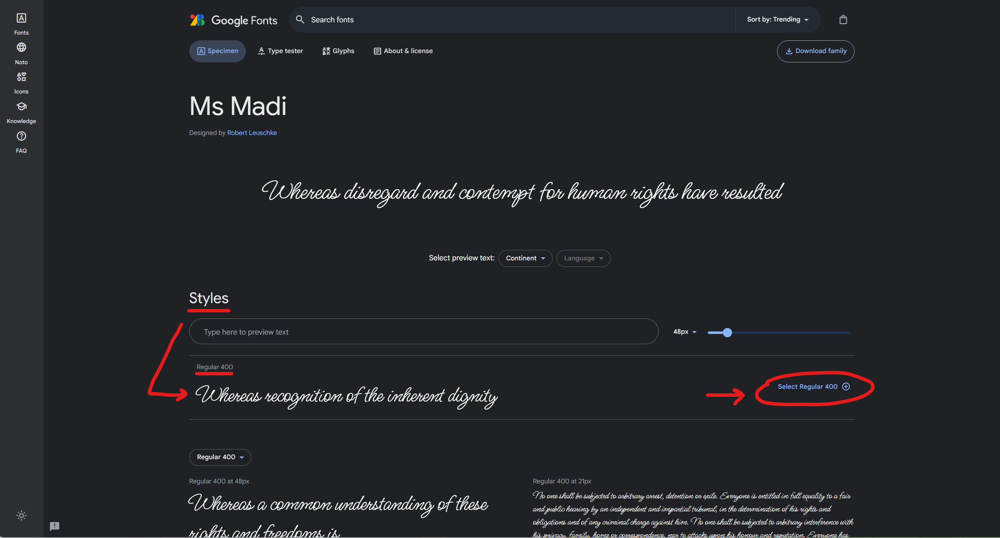Clicking the "Select Regular 400" option to the right of the style -
After doing so, you'll see that the option has changed to "Remove Regular 400" instead of "Select".
In addition, there's a little circle that appeared on top of the icon of the shopping bag at the top right of the page. This is where all the fonts we select are collected.
Go ahead and click on the shopping bag icon to show your selected font(s).
NOTE: You may find that the "shopping bag" opens up on its own the first time you select a font.
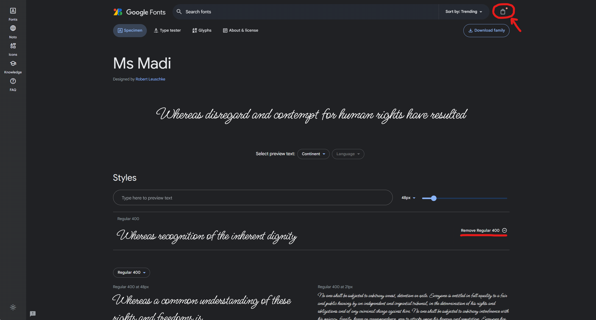Opening the "shopping bag" of fonts -
After the "shopping bag" is clicked, a side panel will slide open from the right. At the top of it, you should see the font family that we've selected.
In our case, this would be the Ms Madi font family, and particularly the "Regular 400" font style from it.
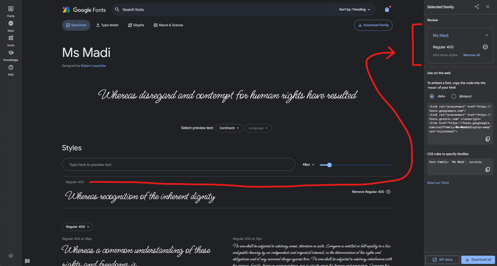Finding our selected font styles in the "shopping cart" -
Okay, so we've selected the font that we want. How do we actually use it on our web page?
Well, we're getting to that.
See how beneath that section with our selected font family style, there's another section called "Use on the web"?
That's where we're heading next.
There are two radio buttons under there: one for <link> and one for @import.
Go ahead and select the @import one.
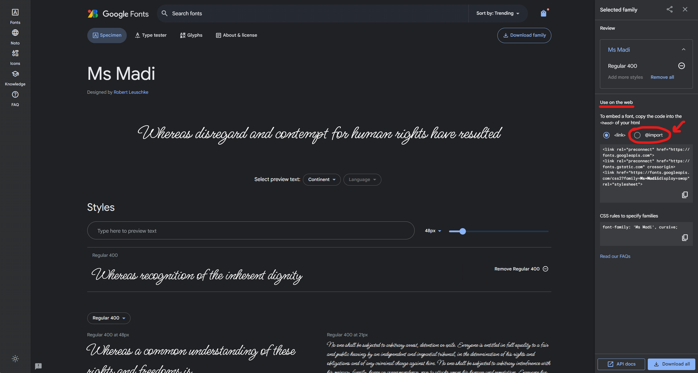Selecting @import under "Use on the web" -
After selecting @import, the code sample beneath it will change.
Now we have access to a CSS code snippet to include in our CSS...sort of.
See those <style> tags in there? That's HTML code, and we don't want that. However, the HTML <style> element is unique in that whatever code is put inside of it is processed as CSS.
It's the code in between the <style> tags that is the CSS we want.
Select and copy the code in between the <style> tags, and paste that at the top of our CSS file.
That @import code snippet will download the font we selected to our web page whenever anyone views it!
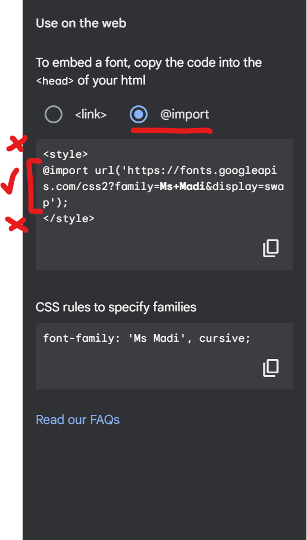Selecting the correct lines of code between the <style> tags. -
However, we're not done yet.
We've made the font available for us to use, but we haven't actually used it anywhere on the page yet.
To do so, look at the code field beneath the @import one; in there, you'll find the font-family property value that you'll want to use to apply that font to whatever element you want to set it to.
For instance, if you wanted to apply the "Ms Madi" font to all paragraphs on your page, you could write something like this:
p {
font-family: 'Ms Madi', cursive;
}And that's basically it! You just need to include the @import at the top of your CSS file, and then set the font-family wherever you want to use it.
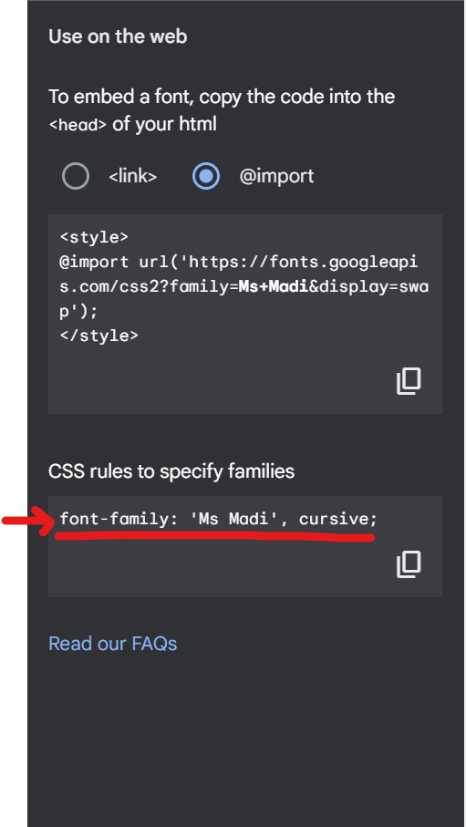The font-family property value to use -
But wait! There's more!
What if you want to use more than one font from Google Fonts?
Well, you can do that too!
Let's check out another font from Google Fonts called Tektur.
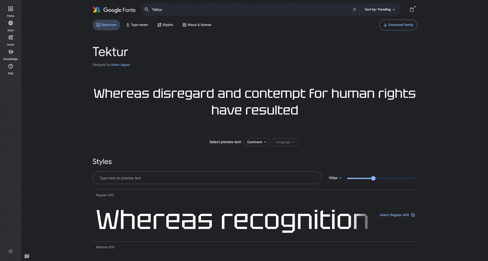The Tektur font -
Notice that Tektur has a LOT more Styles available for us to use, and each style has its own "Select" link to the far right.
Let's go ahead and select the top three to see what happens.
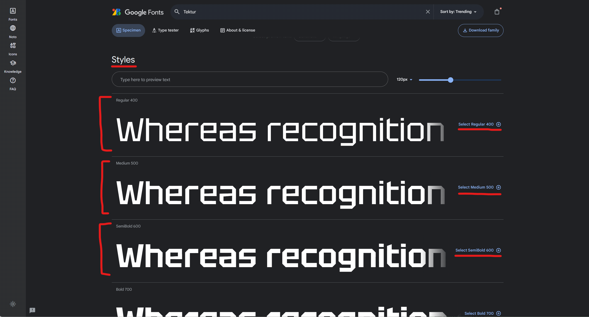The many Styles of Tektur -
If we jump back to our "shopping bag", we'll see that those new Styles we selected are now in there too.
Ms Madi is also still in there, just collapsed, so that we can focus on one font family at a time.
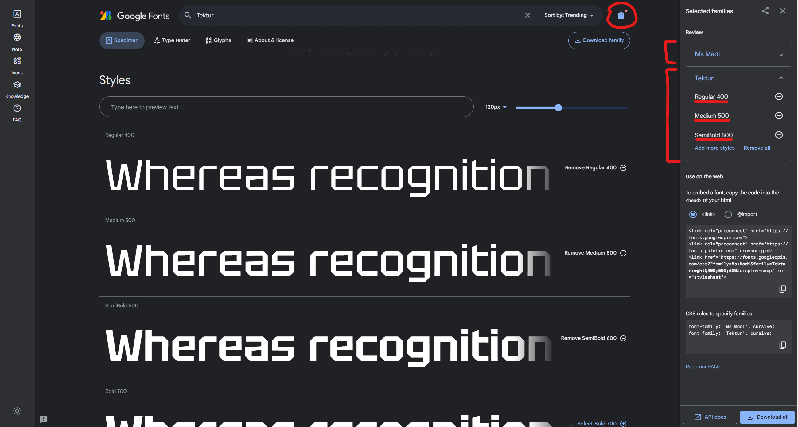Our selected Tektur styles in the "shopping bag" -
To use these newly selected fonts, we're going to move once again to the "Use on the web" section.
And once again, we're going to select the @import option, and pick the code from in between the <style> tags.
Note that the code includes references to both Ms Madi AND the Tektur font styles we selected.
So if you want to use multiple Google Font font families on a web page, you don't need to have multiple @import lines of code; as long as you have them all grouped in the same "shopping bag", you should only need one single @import line to make them all available.
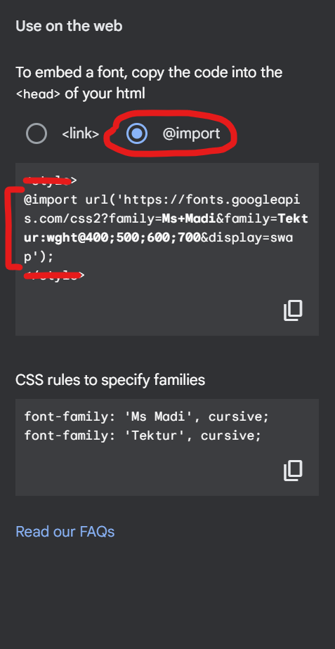The @import code for both Ms Madi and Tektur -
Then, in the code beneath that, notice that we now have two separate font-family code snippets: one for Ms Madi and one for Tektur.
To be clear, you're never going to use them together like that. They're only showing you examples side-by-side of how you'd use them.
If you want to use Ms Madi in an element, then you'd pick the
font-family: 'Ms Madi', cursive;code snippet.And if you want to use Tektur in an element, then you'd pick the
font-family: 'Tektur', cursive;code snippet.And that's basically it! Just remember that none of the font-family code above or to the right will work unless the @import is at the top of your code.
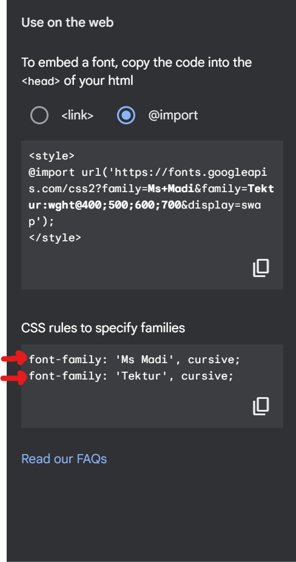The font-family code for both Ms Madi and Tektur